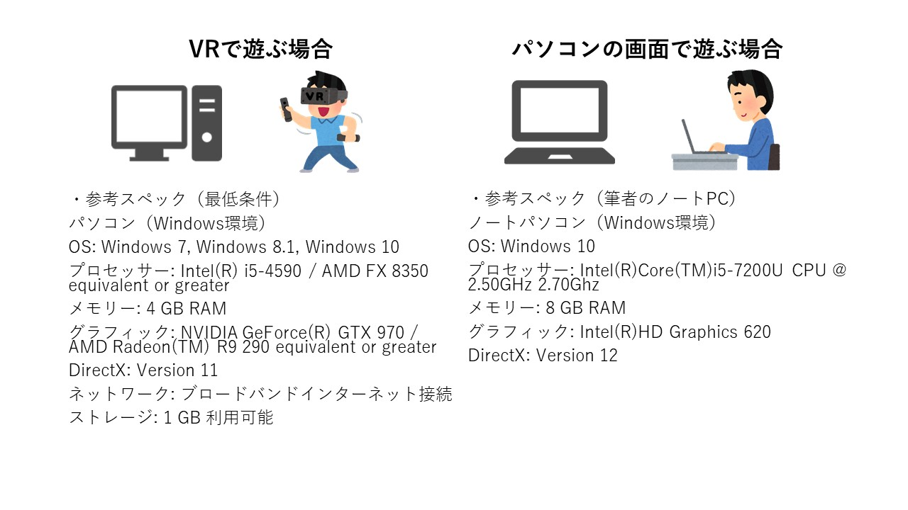
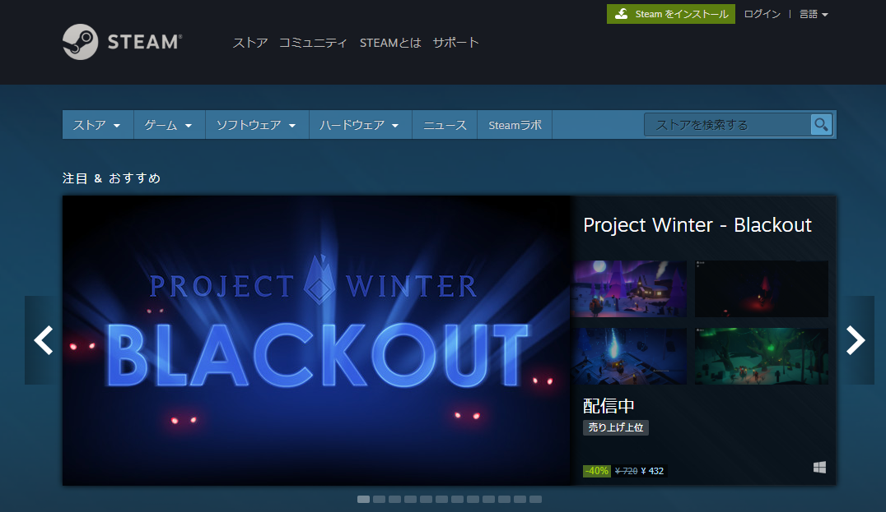
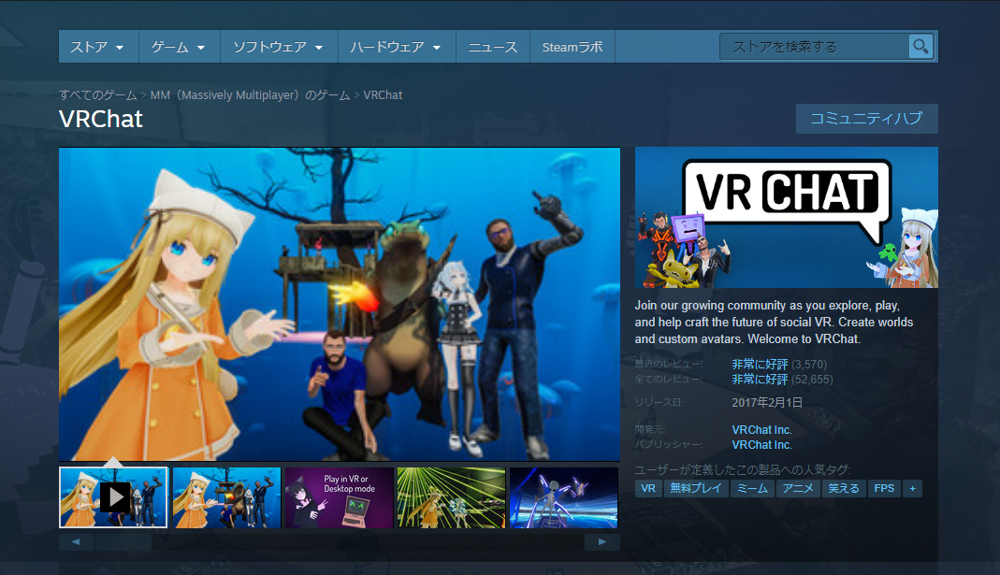
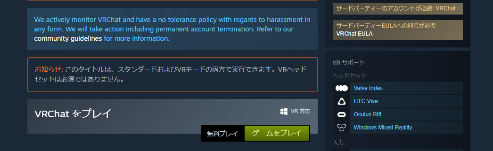
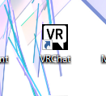
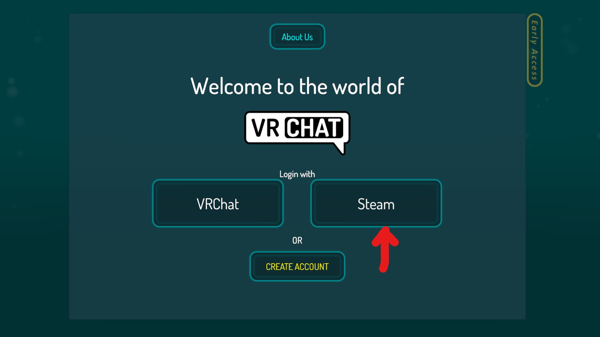

◆VRChatの始め方
このページでは、VRChatをとりあえず遊んでみるまでの手順を紹介しています
◆目次
- VRChatとは
- 用意するもの
- VRChatのダウンロードから遊ぶまで
- キーボードでの基本的な操作方法
- 人のいるところへ行ってみよう
◆VRChatとは
-
VRChat社が運営する、仮想空間を使った無料のソーシャルネットワークサービス
仮想空間上で同時にオンラインしている世界中の人と交流できます。
仮想空間内では自分の分身として「アバター」を使用します。
◆用意するもの
- パソコン（Windows環境） 
- 外付けマイク

VRChatは基本的には会話でコミュニケーションを取るので、マイクを用意すると交流しやすくなります。
マイクが付いたヘッドホンだと相手の声も聞こえやすくなるのでおすすめです。
◆VRChatのダウンロードから遊ぶまで
- 1.Steamのインストール
- 2.VRChatのインストール
- 3.VRChatを遊ぼう！
1.Steamのインストール
Steamとは

PCゲーム、PCソフトウェアなどのダウンロード販売プラットホームです。
VRChatのインストールにはSteamを介する必要があります。
https://store.steampowered.com/?l=japanese
2.VRChatのインストール
-
Steamをインストールしたら、次はVRChatをインストールしましょう。
VRChatは無料でダウンロードできます。
https://store.steampowered.com/app/438100/VRChat/  
3.VRChatを遊ぼう！
-
インストールが終わると、デスクトップにVRChatのアイコンが出ます。

起動するとVRCアカウントかSteamアカウントのどちらで遊ぶか選択肢が出ます。
最初はSteamアカウントで始めてみましょう。
Steamのアカウントの場合は自分でアバターのアップロードは行えませんが、VRChat内で用意されているアバターには着替えられます。
 ログインするとチュートリアルが始まります。基本的な操作がかんたんな英語で説明されます。
◆キーボードでの基本的な操作方法
パソコンの画面で遊ぶモード（デスクトップモード）での操作方法を説明します
アクション1（決定・物をつかむ・使用する…など）：左クリック
アクション2（物を離す）：右クリック
前移動：W
後移動：S
左移動：A
右移動：D
メニュー：ESC
スクリーンショット：F12

◆人のいるところへ行ってみよう
VRChatのインストールが終わり、チュートリアルで基本の操作を理解したら人のいるところへ行ってみましょう。
まずは日本人ユーザーが多くいるワールドへ行くとコミュニケーションのハードルが下がるかもしれません。
ワールドを移動するにはメニューを開き、「World」という項目を選択します。
この項では2020年4月現在VRChatで日本人ユーザーに会いやすいワールドを紹介します。
日本人向けのチュートリアルが見れるワールドです。 操作方法だけでなく、メニューの説明や設定なども説明されています。 また、このワールドに来る日本人ユーザーは初心者ユーザーへの説明を積極的に行ってくれる方が多く、あちらから話しかけて解説をしてくれる場合があります。
ファンタジーの酒場を模したワールドです。
ユーザーが歓談したりのんびり過ごすことを主にしており、雰囲気が良いです。
話しかける際は挨拶をしっかりしましょう。マイクが不調で声が出ていないなどの問題がなければ、リアクションを返してくれるはずです。
日本人ユーザー以外にも日本人とコミュニケーションをとりたい海外ユーザーが遊びに来ることもあります。